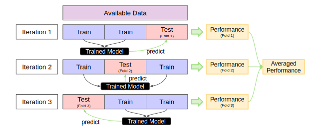

3 Resampling and Benchmarking
Giuseppe Casalicchio ![]()
Lukas Burk
Abstract
Estimating the generalization performance of a machine learning algorithm on a given task requires additional data not used during training. Resampling refers to the process of repeatedly splitting the available data into training and test sets to enable unbiased performance estimation. This chapter introduces common resampling strategies and illustrates their use with the mlr3 ecosystem. Benchmarking builds upon resampling, encompassing the fair comparison of multiple machine learning algorithms on at least one task. We show how benchmarking can be performed within the mlr3 ecosystem, from the construction of benchmark designs to the statistical analysis of the benchmark results.
A deployed supervised machine learning model should generalize well to new, unseen data. To properly assess the generalization performance of a model, we must first decide on a performance measure that is appropriate for our given task and evaluation goal. Once we have decided on a performance measure, the next step is to adopt a strategy that defines how to use the available data to estimate the generalization performance. Unfortunately, using the same data to train and test a model is a bad strategy as it would lead to an overly optimistic performance estimate. For example, an overfitted model may perfectly fit the data on which it was trained, but may not generalize well to new data. Assessing its performance using the same data it was trained would misleadingly suggest a well-performing model. It is therefore common practice to test a model on independent data not used to train a model. However, we typically train a deployed model on all available data, which leaves no data to assess its generalization performance. To address this issue, existing performance estimation strategies withhold a subset of the available data for evaluation purposes. This so-called test set serves as unseen data and is used to estimate the generalization performance.
A common simple strategy is the holdout method, which randomly partitions the data into a single training and test set using a pre-defined splitting ratio. The training set is used to create an intermediate model, whose sole purpose is to estimate the performance using the test set. This performance estimate is then used as a proxy for the performance of the final model trained on all available data and deployed in practice. Ideally, the training set should be as large as all available data so that the intermediate model represents the final model well. If the training data is much smaller, the intermediate model learns less complex relationships compared to the final model, resulting in a pessimistically biased performance estimate. On the other hand, we also want as much test data as possible to reliably estimate the generalization performance. However, both goals are not possible if we have only access to a limited amount of data.
To address this issue, resampling strategies repeatedly split all available data into multiple training and test sets and average the performance over multiple resampling iterations (see Figure 3.1 for an illustration). A higher number of resampling iterations can reduce the variance and result in a more reliable performance estimate (see TODO-LINK-TO-AN-EXERCISE for illustration). Resampling allows using more data points for testing while keeping the training sets as large as possible. They usually use all available data to assess the performance and thereby avoid the performance estimate from being biased by a particular split which is a known issue of the holdout method. However, since resampling strategies create multiple intermediate models trained on different parts of the available data, they evaluate the performance of the learning algorithm that induced the final model, rather than the performance of the final model itself. If we only have access to a limited amount of data, the best we can do is to use the performance of the learning algorithm as a proxy for the performance of the final model. In Section 3.2, we will learn how to estimate the generalization performance of a Learner using the mlr3 package.
Benchmarking in supervised machine learning refers to the comparison of different learners on a single task or multiple tasks. The main goal when comparing learners on a single task is to rank them according to a pre-defined performance measure and to identify the best-performing learner. When comparing learners on multiple tasks, the main aim is often to gain insights into how different learners perform when they are trained using different data situations. For example, it is common practice to analyze the generalization performance or runtime of a newly proposed learning algorithm in a benchmark study where it has been compared with existing learners. In Section 3.3, we provide code examples for conducting benchmark studies and performing statistical analysis of benchmark results using the mlr3 package.
3.1 Quick Start
In the previous chapter, we have applied the holdout method by manually partitioning the data contained in a Task object into a single training set (to train the model) and a single test set (to estimate the generalization performance). As a quick start into resampling and benchmarking with the mlr3 package, we show a short example of how to do this with the resample() and benchmark() convenience functions. Specifically, we show how to estimate the generalization performance of a learner on a given task by the holdout method using resample() and how to usebenchmark() to compare two learners on a task.
We first define the corresponding Task and Learner objects used throughout this chapter as follows:
The code example below shows how to apply holdout (specified using rsmp("holdout")) on the penguins task to estimate classification accuracy of a decision tree from the rpart package:
resampling = rsmp("holdout")
rr = resample(task = task, learner = learner, resampling = resampling)
rr$aggregate(msr("classif.acc"))classif.acc
0.9391304 The benchmark() function internally uses the resample() function to estimate the performance based on a resampling strategy. For illustration, we show a minimal code example that compares the classification accuracy of the decision tree against a featureless learner which always predicts the majority class:
lrns = c(learner, lrn("classif.featureless"))
d = benchmark_grid(task = task, learner = lrns, resampling = resampling)
bmr = benchmark(design = d)
acc = bmr$aggregate(msr("classif.acc"))
acc[, .(task_id, learner_id, classif.acc)] task_id learner_id classif.acc
1: penguins classif.rpart 0.9565217
2: penguins classif.featureless 0.4695652Further details on resampling and benchmarking can be found in the subsequent sections Section 3.2 and Section 3.3.
3.2 Resampling Strategies
Existing resampling strategies differ in how they partition the available data into training and test set, and a comprehensive overview can be found in Japkowicz and Shah (2011). For example, the \(k\)-fold cross-validation method randomly partitions the data into \(k\) subsets, called folds (see Figure 3.2). Then \(k\) models are trained on training data consisting of \(k-1\) of the folds, with the remaining fold being used as test data exactly once in each of the \(k\) iterations. The \(k\) performance estimates resulting from each fold are then averaged to obtain a more reliable performance estimate. Several variations of cross-validation exist, including repeated \(k\)-fold cross-validation where the entire process illustrated in Figure 3.2 is repeated multiple times, and leave-one-out cross-validation where the test set in each fold consists of exactly one observation.
Other well-known resampling strategies include subsampling and bootstrapping. Subsampling — also known as repeated holdout — repeats the holdout method and creates multiple train-test splits, taking into account the ratio of observations to be included in the training sets. Bootstrapping creates training sets by randomly drawing observations from all available data with replacement. Some observations in the training sets may appear more than once, while the other observations that do not appear at all are used as test set. The choice of the resampling strategy usually depends on the specific task at hand and the goals of the performance assessment. Properties and pitfalls of different resampling techniques have been widely studied and discussed in the literature, see e.g., Bengio and Grandvalet (2003), Molinaro, Simon, and Pfeiffer (2005), Kim (2009), Bischl et al. (2012).

In mlr3, many resampling strategies have already been implemented so that users do not have to implement them from scratch, which can be tedious and error-prone. In this section, we cover how to use mlr3 to
- query implemented resampling strategies,
- construct resampling objects for a selected resampling strategy,
- instantiate the train-test splits of a resampling object on a given task, and
- execute the selected resampling strategy on a learning algorithm to obtain resampling results.
3.2.1 Query
All implemented resampling strategies can be queried by looking at the mlr_resamplings dictionary. The dictionary contains several common resampling strategies, including holdout, (repeated) cross-validation, bootstrap, and subsampling. Passing the dictionary to the as.data.table function provides a more structured output with additional information:
key label params iters
1: bootstrap Bootstrap ratio,repeats 30
2: custom Custom Splits NA
3: custom_cv Custom Split Cross-Validation NA
4: cv Cross-Validation folds 10
5: holdout Holdout ratio 1
6: insample Insample Resampling 1
7: loo Leave-One-Out NA
8: repeated_cv Repeated Cross-Validation folds,repeats 100
9: subsampling Subsampling ratio,repeats 30For example, the column params shows the parameters of each resampling strategy (e.g., the train-test splitting ratio or the number of repeats) and the column iters shows the default value for the number of performed resampling iterations (i.e., the number of model fits).
3.2.2 Construction
Once we have decided on a resampling strategy, we have to construct a Resampling object via the function rsmp() which will define the resampling strategy we want to employ. For example, to construct a Resampling object for holdout, we use the value of the key column from the mlr_resamplings dictionary and pass it to the convenience function rsmp():
<ResamplingHoldout>: Holdout
* Iterations: 1
* Instantiated: FALSE
* Parameters: ratio=0.6667By default, the holdout method will use 2/3 of the data as training set and 1/3 as test set. We can adjust this by specifying the ratio parameter for holdout either during construction or by updating the ratio parameter afterwards. For example, we construct a Resampling object for holdout with a 80:20 split (see first line in the code below) then update to 50:50 (see second line in the code below):
Holdout only estimates the generalization performance using a single test set. To obtain a more reliable performance estimate by making use of all available data, we may use other resampling strategies. For example, we could also set up a 10-fold cross-validation via
By default, the $is_instantiated field of a Resampling object constructed as shown above is set to FALSE. This means that the resampling strategy is not yet applied to a task, i.e., the train-test splits are not contained in the Resampling object.
3.2.3 Instantiation
To generate the train-test splits for a given task, we need to instantiate a resampling strategy by calling the $instantiate() method of the previously constructed Resampling object on a Task. This will manifest a fixed partition and store the row indices for the training and test sets directly in the Resampling object. We can access these rows via the $train_set() and $test_set() methods:
resampling = rsmp("holdout", ratio = 0.8)
resampling$instantiate(task)
train_ids = resampling$train_set(1)
test_ids = resampling$test_set(1)
str(train_ids) int [1:275] 2 3 4 5 6 7 8 9 10 11 ... int [1:69] 1 12 16 22 26 28 30 32 37 38 ...Instantiation is especially relevant is when the aim is to fairly compare multiple learners. Here, it is crucial to use the same train-test splits to obtain comparable results. That is, we need to ensure that all learners to be compared use the same training data to build a model and that they use the same test data to evaluate the model performance. This can be achieved using the same instantiated Resampling object for each learner or using the benchmark() function introduced in Section 3.3 which automatically instantiates the same train-test splits for each task.
3.2.4 Execution
Calling the function resample() on a task, learner, and constructed resampling object returns a ResampleResult object which contains all information needed to estimate the generalization performance. Specifically, the function will internally use the learner to train a model for each training set determined by the resampling strategy and store the model predictions of each test set:
<ResampleResult> of 5 iterations
* Task: penguins
* Learner: classif.rpart
* Warnings: 0 in 0 iterations
* Errors: 0 in 0 iterationsHere, we used 5-fold cross-validation as resampling strategy. The resulting ResampleResult object (stored as rr) provides various methods to access the stored information. The two most relevant methods for performance assessment are $score() and $aggregate().
The $score() method uses Measure objects to calculate the performance measure of each resampling iteration separately. By default, it uses the model predictions and the corresponding ground truth values stored in the test set of the corresponding resampling iteration to calculate the performance measure. Alternatively, we can set the argument predict_sets = "train" within the $score() method to calculate the performance measure of each resampling iteration based on the training set instead of the test set. If we do not explicitly pass a Measure object to the $score() method, the classification error (classif.ce) and the mean squared error (regr.mse) are used as defaults for classification and regression tasks respectively. In the code example below, we explicitly use the classification accuracy (classif.acc) as performance measure and pass it to the $score() method to obtain the estimated performance of each resampling iteration separately:
iteration classif.acc
1: 1 0.8985507
2: 2 0.9855072
3: 3 0.8695652
4: 4 0.9420290
5: 5 0.9558824Similarly, we can pass Measure objects to the $aggregate() method to calculate an aggregated score across all resampling iterations. The type of aggregation is usually determined by the Measure object (see also the fields $average and $aggregator the in help page of Measure for more details). By default, the classification accuracy specified by msr("classif.acc") uses the macro average, i.e., the accuracy is calculated in each resampling iteration separately and then averaged to obtain the macro-averaged performance estimate. Using the option average = "micro" combines the predictions of each resampling iteration into a single Prediction object and computes a micro-averaged performance estimate:
classif.acc
0.9303069 classif.acc
0.9302326 The aggregated score refers to the generalization performance of our selected learner on the given task estimated by the resampling strategy defined in the Resampling object. It can be useful to also look at the individual performance values of each resampling iteration (as returned by the $score() method) to see if one (or more) of the iterations lead to very different performance results.
3.2.5 Inspect ResampleResult Objects
Some readers may want to skip this section of the book.
In this section, we briefly show how to inspect some important fields and methods of a ResampleResult object.
Each resampling iteration involves a training step and a prediction step. Learner-specific error or warning messages may occur at each of these two steps. If the learner passed to the resample() function runs in an encapsulated framework that allows logging (see the $encapsulate field of a Learner object), all potential warning or error messages will be stored in the $warnings and $errors fields of the ResampleResult object.
A ResampleResult object internally stores Prediction objects produced by each intermediate model from each resampling iteration, as these predictions are required to calculate a performance measure. The list of Prediction objects of each resampling iteration can be extracted by the $predictions() method:
List of 5
$ :Classes 'PredictionClassif', 'Prediction', 'R6' <PredictionClassif>
$ :Classes 'PredictionClassif', 'Prediction', 'R6' <PredictionClassif>
$ :Classes 'PredictionClassif', 'Prediction', 'R6' <PredictionClassif>
$ :Classes 'PredictionClassif', 'Prediction', 'R6' <PredictionClassif>
$ :Classes 'PredictionClassif', 'Prediction', 'R6' <PredictionClassif> This allows to analyze the predictions of individual intermediate models or to manually compute a macro-averaged performance estimate. Instead, we can use the $prediction() method to extract a single Prediction object that combines the predictions of each intermediate model. The combined prediction object can be used to manually compute a micro-averaged performance estimate, for example:
<PredictionClassif> for 344 observations:
row_ids truth response
7 Adelie Adelie
9 Adelie Adelie
11 Adelie Adelie
---
333 Chinstrap Chinstrap
338 Chinstrap Chinstrap
339 Chinstrap Chinstrapclassif.acc
0.9302326 By default, the intermediate models produced at each resampling iteration are discarded after the prediction step to reduce memory consumption of the ResampleResult object and because only the predictions are required to calculate the performance measure. However, it can sometimes be useful to inspect, compare, or extract information from these intermediate models.
To do so, we can configure the resample() function to keep the fitted intermediate models by setting the store_models argument to TRUE. Each model trained in a specific resampling iteration is then stored in the resulting ResampleResult object and can be accessed via $learners[[i]]$model, where i refers to the i-th resampling iteration:
n= 275
node), split, n, loss, yval, (yprob)
* denotes terminal node
1) root 275 152 Adelie (0.447272727 0.192727273 0.360000000)
2) flipper_length< 206.5 171 50 Adelie (0.707602339 0.286549708 0.005847953)
4) bill_length< 43.35 122 4 Adelie (0.967213115 0.032786885 0.000000000) *
5) bill_length>=43.35 49 4 Chinstrap (0.061224490 0.918367347 0.020408163) *
3) flipper_length>=206.5 104 6 Gentoo (0.019230769 0.038461538 0.942307692)
6) bill_depth>=17.2 8 4 Chinstrap (0.250000000 0.500000000 0.250000000) *
7) bill_depth< 17.2 96 0 Gentoo (0.000000000 0.000000000 1.000000000) *3.2.6 Custom Resampling
Some readers may want to skip this section of the book.
Sometimes it is necessary to perform resampling with custom splits, e.g., to reproduce results reported in a study with pre-defined folds or to implement a special splitting structure as required for time series. A custom resampling strategy can be constructed using rsmp("custom"), where the row indices of the observations used for training and testing must be defined manually when instantiated in a task. In the example below, we construct a custom holdout resampling strategy by manually assigning row indices to the $train and $test fields.
The resulting Resampling object can then be used like all other resampling strategies. To show that both sets contain the row indices we have defined, we can inspect the instantiated Resampling object:
int [1:233] 1 2 3 4 5 6 7 8 9 10 ... int [1:100] 51 52 53 54 55 56 57 58 59 60 ...The above is equivalent to a single custom train-test split analogous to the holdout strategy. A custom version of the cross-validation strategy can be constructed using rsmp("custom_cv"). The important difference is that we now have to specify either a custom factor variable (using the f argument of the $instantiate() method) or a factor column (using the col argument of the $instantiate() method) from the data to determine the folds.
In the example below, we instantiate a custom 4-fold cross-validation strategy using a factor variable called folds that contains 4 equally sized levels to define the 4 folds, each with one quarter of the total size of the "penguin" task:
3.2.7 Resampling with Stratification and Grouping
This section of the book might be complex for some readers.
In mlr3, we can assign a special role to a feature contained in the data by configuring the corresponding $col_roles field of a Task. The two relevant column roles that will affect behavior of a resampling strategy are "group" or "stratum", whose meaning is explained in detail below.
In some cases, it is desirable to keep observations together when the data is split into corresponding training and test sets, especially when a set of observations naturally belong to a group (e.g., when the data contains repeated measurements of individuals). When observations belong to groups, we want to ensure that all observations of the same group belong to either the training set or the test set.
In mlr3, the column role "group" allows to specify the column in the data that defines the group structure of the observations (see also the help page of Resampling for more information on the column role "group"). The column role can be specified by assigning a feature to the $col_roles$group field which will then determine the group structure. The following code uses 3-fold cross-validation and the feature year of the penguins task to determine the grouping. Since the feature year contains only three distinct values (i.e., 2007, 2008, and 2009), the corresponding test sets consist of observations from only one year:
task_grp = tsk("penguins")
task_grp$col_roles$group = "year"
r = rsmp("cv", folds = 3)
r$instantiate(task_grp)
table(task_grp$data(cols = "year"))year
2007 2008 2009
110 114 120 year
2009
120 year
2008
114 year
2007
110 Another column role available in mlr3 is "stratum", which implements stratified sampling. Stratified sampling ensures that one or more discrete features within the training and test sets will have a similar distribution as in the original task containing all observations. This is especially useful when a discrete feature is highly imbalanced and we want to make sure that the distribution of that feature is similar in each resampling iteration. The $col_roles$stratum field of a Task can be set to one or multiple features (including the target in case of classification tasks). In case of multiple features, each combination of the values of all stratification features will form a strata. For example, the target column species of the penguins task is imbalanced:
species
Adelie Chinstrap Gentoo
0.4418605 0.1976744 0.3604651 Without specifying a "stratum" column role, the species column will have quite different class distributions across the corresponding test sets of a 3-fold cross-validation strategy:
r = rsmp("cv", folds = 3)
r$instantiate(task)
prop.table(table(task$data(rows = r$test_set(1), cols = "species")))species
Adelie Chinstrap Gentoo
0.4869565 0.2000000 0.3130435 species
Adelie Chinstrap Gentoo
0.4086957 0.1913043 0.4000000 species
Adelie Chinstrap Gentoo
0.4298246 0.2017544 0.3684211 The code below uses species as "stratum" column role to illustrate that the distribution of species in each test set will closely match the original distribution:
task_str = tsk("penguins")
task_str$col_roles$stratum = "species"
r = rsmp("cv", folds = 3)
r$instantiate(task_str)
prop.table(table(task_str$data(rows = r$test_set(1), cols = "species")))species
Adelie Chinstrap Gentoo
0.4396552 0.1982759 0.3620690 species
Adelie Chinstrap Gentoo
0.4434783 0.2000000 0.3565217 species
Adelie Chinstrap Gentoo
0.4424779 0.1946903 0.3628319 Rather than assigning the $col_roles$stratum directly, it is also possible to use the $set_col_roles() method to add or remove columns to specific roles incrementally:
character(0)[1] "species"We can further inspect the current stratification via the $strata field, which returns a data.table of the number of observations (N) and row indices (row_id) of each stratum. Since we stratified by the species column, we expect to see the same class frequencies as when we tabulate the task by the species column:
N row_id
1: 152 1,2,3,4,5,6,...
2: 124 153,154,155,156,157,158,...
3: 68 277,278,279,280,281,282,...species
Adelie Chinstrap Gentoo
152 68 124 Should we add another stratification column, the $strata field will show the same values as when we cross-tabulate the two variables of the task:
N row_id
1: 50 1,2,3,4,5,6,...
2: 50 51,52,53,54,55,56,...
3: 52 101,102,103,104,105,106,...
4: 34 153,154,155,156,157,158,...
5: 46 187,188,189,190,191,192,...
6: 44 233,234,235,236,237,238,...
7: 26 277,278,279,280,281,282,...
8: 18 303,304,305,306,307,308,...
9: 24 321,322,323,324,325,326,... year
species 2007 2008 2009
Adelie 50 50 52
Chinstrap 26 18 24
Gentoo 34 46 443.2.8 Plotting Resample Results
mlr3viz provides a autoplot() method to automatically visualize the resampling results either in a boxplot or histogram:
resampling = rsmp("bootstrap")
rr = resample(task, learner, resampling)
library(mlr3viz)
autoplot(rr, measure = msr("classif.acc"), type = "boxplot")
autoplot(rr, measure = msr("classif.acc"), type = "histogram")`stat_bin()` using `bins = 30`. Pick better value with `binwidth`.The histogram is useful to visually gauge the variance of the performance results across resampling iterations, whereas the boxplot is often used when multiple learners are compared side-by-side.
We can also visualize a 2-dimensional prediction surface of individual models in each resampling iteration if the task is restricted to two features:
task$select(c("bill_length", "flipper_length"))
resampling = rsmp("cv", folds = 4)
rr = resample(task, learner, resampling, store_models = TRUE)
autoplot(rr, type = "prediction")Warning: Removed 2 rows containing missing values (`geom_point()`).Prediction surfaces like this are a useful tool for model inspection, as they can help to identify the cause of unexpected performance result. Naturally, they are also popular for didactical purposes to illustrate the prediction behaviour of different learning algorithms, such as the classification tree in the example above with its characteristic orthogonal lines.
3.3 Benchmarking
Benchmarking is used to compare the performance of different learning algorithms applied on one or more tasks using (potentially different) resampling strategies. The purpose is to rank the learning algorithms regarding a performance measure of interest and to identify the best learning algorithms for a certain task or across various tasks. The mlr3 package offers the convenience function benchmark() to conduct a benchmark experiment and repeatedly train and evaluate multiple learners under the same conditions. In this section, we cover how to
- construct a benchmark design to define the benchmark experiments to be performed,
- run the benchmark experiments and aggregate their results, and
- convert benchmark objects to other types of objects that can be used for different purposes.
3.3.1 Constructing Benchmarking Designs
In mlr3, we can define a design to perform benchmark experiments via the benchmark_grid() convenience function. The design is essentially a table of scenarios to be evaluated and usually consists of unique combinations of Task, Learner and Resampling triplets.
The benchmark_grid() function constructs an exhaustive design to describe which combinations of learner, task and resampling should be used in a benchmark experiment. It properly instantiates the used resampling strategies so that all learners are evaluated on the same train-test splits for each task, ensuring a fair comparison. To construct a list of Task, Learner and Resampling objects, we can use the convenience functions tsks(), lrns(), and rsmps().
We design an exemplary benchmark experiment and train a classification tree from the rpart package, a random forest from the ranger package and a featureless learner serving as a baseline on four different binary classification tasks. The constructed benchmark design is a data.table containing the task, learner, and resampling combinations in each row that should be performed:
library("mlr3verse")
tsks = tsks(c("spam", "german_credit", "sonar", "breast_cancer"))
lrns = lrns(c("classif.ranger", "classif.rpart", "classif.featureless"),
predict_type = "prob")
rsmp = rsmps("cv", folds = 5)
design = benchmark_grid(tsks, lrns, rsmp)
head(design) task learner resampling
1: <TaskClassif[50]> <LearnerClassifRanger[38]> <ResamplingCV[20]>
2: <TaskClassif[50]> <LearnerClassifRpart[38]> <ResamplingCV[20]>
3: <TaskClassif[50]> <LearnerClassifFeatureless[38]> <ResamplingCV[20]>
4: <TaskClassif[50]> <LearnerClassifRanger[38]> <ResamplingCV[20]>
5: <TaskClassif[50]> <LearnerClassifRpart[38]> <ResamplingCV[20]>
6: <TaskClassif[50]> <LearnerClassifFeatureless[38]> <ResamplingCV[20]>Since the data.table contains R6 columns within list-columns, we unfortunately can not infer too much about task column, but the ids utility function can be used for quick inspection or subsetting:
[1] "spam" "spam" "spam" "german_credit"
[5] "german_credit" "german_credit" "sonar" "sonar"
[9] "sonar" "breast_cancer" "breast_cancer" "breast_cancer" task learner resampling
1: <TaskClassif[50]> <LearnerClassifRanger[38]> <ResamplingCV[20]>
2: <TaskClassif[50]> <LearnerClassifRpart[38]> <ResamplingCV[20]>
3: <TaskClassif[50]> <LearnerClassifFeatureless[38]> <ResamplingCV[20]>It is also possible to subset the design, e.g., to exclude a specific task-learner combination by manually removing a certain row from the design which is a data.table. Alternatively, we can also construct a custom benchmark design by manually defining a data.table containing task, learner, and resampling objects (see also the examples section in the help page of benchmark_grid()).
3.3.2 Execution of Benchmark Experiments
To run the benchmark experiment, we can pass the constructed benchmark design to the benchmark() function:
<BenchmarkResult> of 60 rows with 12 resampling runs
nr task_id learner_id resampling_id iters warnings errors
1 spam classif.ranger cv 5 0 0
2 spam classif.rpart cv 5 0 0
3 spam classif.featureless cv 5 0 0
4 german_credit classif.ranger cv 5 0 0
5 german_credit classif.rpart cv 5 0 0
6 german_credit classif.featureless cv 5 0 0
7 sonar classif.ranger cv 5 0 0
8 sonar classif.rpart cv 5 0 0
9 sonar classif.featureless cv 5 0 0
10 breast_cancer classif.ranger cv 5 0 0
11 breast_cancer classif.rpart cv 5 0 0
12 breast_cancer classif.featureless cv 5 0 0Once the benchmarking is finished (this can take some time, depending on the size of your design), we can aggregate the performance results with the $aggregate() method of the returned BenchmarkResult:
task_id learner_id classif.acc
1: spam classif.ranger 0.9500085
2: spam classif.rpart 0.8956734
3: spam classif.featureless 0.6059557
4: german_credit classif.ranger 0.7600000
5: german_credit classif.rpart 0.7380000
6: german_credit classif.featureless 0.7000000
7: sonar classif.ranger 0.8029036
8: sonar classif.rpart 0.6880372
9: sonar classif.featureless 0.5335656
10: breast_cancer classif.ranger 0.9721876
11: breast_cancer classif.rpart 0.9414556
12: breast_cancer classif.featureless 0.6500966As the results are shown in a data.table, we can easily aggregate the results even further. For example, if we are interested in the learner that performed best across all tasks, we could average the performance of each individual learner across all tasks. Please note that averaging accuracy scores across multiple tasks as in this example is not always appropriate for comparison purposes. A more common alternative to compare the overall algorithm performance across multiple tasks is to first compute the ranks of each learner on each task separately and then compute the average ranks. For illustration purposes, we show how to average the performance of each individual learner across all tasks:
learner_id mean_accuracy
1: classif.ranger 0.8712749
2: classif.rpart 0.8157915
3: classif.featureless 0.6224045Ranking the performance scores can either be done via standard data.table syntax, or more conveniently with the mlr3benchmark package. We first use as.BenchmarkAggr to aggregate the BenchmarkResult using our measure, after which we use the $rank_data() method to convert the performance scores to ranks. The minimize argument is used to indicate that the classification accuracy should not be minimized, i.e. a higher score is better.
library("mlr3benchmark")
bma = as.BenchmarkAggr(bmr, measures = msr("classif.acc"))
bma$rank_data(minimize = FALSE) spam german_credit sonar breast_cancer
ranger 1 1 1 1
rpart 2 2 2 2
featureless 3 3 3 3This results in per-task rankings of the three learners. Unsurprisingly, the featureless learner ranks last, as it always predicts the majority class. However, it is common practice to include it as a baseline in benchmarking experiments to easily gauge the relative performance of other algorithms. In this simple benchmark experiment, the random forest ranked first, outperforming a single classification tree as one would expect.
3.3.3 Inspect BenchmarkResult Objects
A BenchmarkResult object is a collection of multiple ResampleResult objects. These can be extracted via the $resample_result(i) method, where i is the index of the performed benchmark experiment. This allows us to investigate the extracted ResampleResult or individual resampling iterations as shown previously (see Section 3.2).
<ResampleResult> of 5 iterations
* Task: spam
* Learner: classif.ranger
* Warnings: 0 in 0 iterations
* Errors: 0 in 0 iterations<ResampleResult> of 5 iterations
* Task: spam
* Learner: classif.rpart
* Warnings: 0 in 0 iterations
* Errors: 0 in 0 iterationsMultiple ResampleResult can be again converted to a BenchmarkResult with the function as_benchmark_result() and combined with c():
bmr1 = as_benchmark_result(rr1)
bmr2 = as_benchmark_result(rr2)
bmr_combined = c(bmr1, bmr2)
bmr_combined$aggregate(msr("classif.acc")) nr resample_result task_id learner_id resampling_id iters
1: 1 <ResampleResult[21]> spam classif.ranger cv 5
2: 2 <ResampleResult[21]> spam classif.rpart cv 5
1 variable not shown: [classif.acc]Combining multiple BenchmarkResults into a larger result object can be useful if related benchmarks where computed on different machines.
Similar to creating automated visualizations for tasks, predictions, or resample results, the mlr3viz package also provides a autoplot() method to visualize benchmark results, by default as a boxplot:
Such a plot summarizes the benchmark experiment across all tasks and learners. Visualizing performance scores across all learners and tasks in a benchmark helps identifying potentially unexpected behavior, such as a learner performing reasonably well for most tasks, but yielding noticeably worse scores in one task. In the case of our example above, the three learners show consistent relative performance to each other, in the order we would expect.
3.3.4 Statistical Tests
Some readers may want to skip this section of the book.
The package mlr3benchmark we previously used for ranking also provides infrastructure for applying statistical significance tests on BenchmarkResult objects. Currently, Friedman tests and pairwise Friedman-Nemenyi tests (Demšar 2006) are supported to analyze benchmark experiments with at least two independent tasks and at least two learners.
$friedman_posthoc() can be used for a pairwise comparison:
Pairwise comparisons using Nemenyi-Wilcoxon-Wilcox all-pairs test for a two-way balanced complete block designdata: acc and learner_id and task_id ranger rpart
rpart 0.333 -
featureless 0.013 0.333
P value adjustment method: single-stepThese results would indicate a statistically significant difference between the "featureless" learner and "ranger", assuming a 95% confidence level.
The results can be summarized in a critical difference plot which typically shows the mean rank of a learning algorithm on the x-axis along with a thick horizontal line that connects learners which are not significantly different:
Similar to the test output before, this visualization leads to the conclusion that the "featureless" learner and "ranger" are significantly different, whereas the critical rank difference of 1.66 is not exceed for the comparison of the "featureless" learner and "rpar", and "rpart" and "ranger", respectively.
3.4 ROC Analysis
ROC (Receiver Operating Characteristic) analysis is widely used to evaluate binary classifier. Although extensions for multiclass classifiers exist (see e.g., Hand and Till (2001)), we will only cover the much easier binary classification case here. For binary classifiers that predict discrete classes, we can compute a confusion matrix from which we can derive the following performance measures:
- True Positive Rate (TPR), Sensitivity or Recall: How many of the true positives did we predict as positive?
- True Negative Rate (TNR) or Specificity: How many of the true negatives did we predict as negative?
- False Positive Rate (FPR), or 1 - Specificity: How many of the true negatives did we predict as positive?
- Positive Predictive Value (PPV) or Precision: If we predict positive how likely is it a true positive?
- Negative Predictive Value (NPV): If we predict negative how likely is it a true negative?
In general, it is difficult to achieve a high TPR and low FPR simultaneously. ROC analysis aims at evaluating the performance of classifiers by visualizing the trade-off between the true positive rate (TPR) and the false positive rate (FPR) which can be obtained from a confusion matrix. The best classifier lies on the top-left corner where the TPR is 1 and the FPR is 0. Classifiers on the diagonal predict class labels randomly (possibly with different class proportions). For example, if each positive \(x\) will be randomly classified with 25% as to the positive class, we get a TPR of 0.25. If we assign each negative \(x\) randomly to the positive class, we get a FPR of 0.25. In practice, we should never obtain a classifier clearly below the diagonal. Swapping the predicted classes of a classifier would results in points in the ROC space being mirrored at the diagonal baseline. A point in the ROC space below the diagonal might indicate that the positive and negative class labels have been switched by the classifier.
If a binary classifier predicts probabilities instead of discrete classes, we could arbitrarily set a threshold to cut-off the probabilities and assign them to the positive and negative class. Different thresholds may lead to different confusion matrices. In this case, we can characterize the behavior of a binary classifier for different thresholds by plotting the TPR and FPR values – this is the ROC curve (see Figure 3.3 for illustration). A natural performance measure that can be derived from the ROC curve is the area under the curve (AUC). The higher the AUC value, the better the performance, whereas a random classifier would result in an AUC of 0.5.
In Chapter Chapter 2, we have already seen how we can obtain the confusion matrix of a Prediction by accessing the $confusion field. In the code example below, we first retrieve the "sonar" task which is a binary classification task and construct a classification tree learner that predicts probabilities using the predict_type = "prob" option. Next, we use the partition() helper function to randomly split the rows of the Sonar task into two disjoint set, which acts as a convenience shortcut function to the "holdout" resampling strategy. We train the learner on the training set and use the trained model to generate predictions on the test set. Finally, we retrieve the confusion matrix (see also Section 2.4.3 for details on confusion matrices).
task = tsk("sonar")
learner = lrn("classif.rpart", predict_type = "prob")
splits = partition(task, ratio = 0.8)
learner$train(task, splits$train)
pred = learner$predict(task, splits$test)
pred$confusion truth
response M R
M 11 6
R 11 13For mlr3 prediction objects, the ROC curve can be constructed with the previously seenautoplot.PredictionClassif from mlr3viz. The x-axis showing the FPR is labelled “1 - Specificity” by convention, whereas the y-axis shows “Sensitivity” for the TPR.
We can also plot the precision-recall (PR) curve which visualize the PPV vs. TPR. The main difference between ROC curves and PR curves is that the number of true-negatives are not used to produce a PR curve. PR curves are preferred over ROC curves for imbalanced populations. This is because the positive class is usually rare in imbalanced classification tasks. Hence, the FPR is often low even for a random classifier. As a result, the ROC curve may not provide a good assessment of the classifier’s performance, because it does not capture the high rate of false negatives (i.e., misclassified positive observations). See also Davis and Goadrich (2006) for a detailed discussion about the relationship between the PRC and ROC curves.
These visualizations are also available for ResampleResult. Here, the predictions of individual resampling iterations are merged prior to calculating a ROC or PR curve (micro-averaged):
rr = resample(
task = tsk("spam"),
learner = lrn("classif.rpart"),
resampling = rsmp("cv", folds = 10)
)
autoplot(rr1, type = "roc")
autoplot(rr1, type = "prc")We can also visualize a BenchmarkResult to compare multiple learners on the same Task:
3.5 Conclusion (TODO)
If data is pre-processed before feeding it into a learning algorithm, the train-test splits need to be taken into account, i.e., the pre-processing steps should be integrated into the model-building process. In chapter pipelines, we introduce the mlr3pipelines package that solves this issue by combining a Learner with a pre-processing step into a more general machine learning pipeline. As the pipeline itself behaves like a Learner, we can use all functions introduced in this chapter to estimate its generalization performance.
See also the section about nested resampling in the chapter on model optimization when a Learner involves tuning of hyperparameters.
Furthermore, depending on the task at hand, more complex resampling strategies might be required, e.g., for spatiotemporal data.
| S3 function | R6 Class | Summary |
|---|---|---|
rsmp() |
Resampling |
Determines the assignment of observations to train- and test set |
Resources (TODO)
- Learn more about advanced resampling techniques in the blog post Resampling - Stratified, Blocked and Predefined1.
- Checkout the blogpost mlr3 Basics on “Iris” - Hello World!2 to see minimal examples on using resampling and benchmarking on the iris dataset.
- Use resampling and benchmarking for the comparison of decision boundaries of classification learners3.
3.6 Exercises
Use the
spamtask and 5-fold cross-validation to benchmark Random Forest (classif.ranger), Logistic Regression (classif.log_reg), and XGBoost (classif.xgboost) with regards to AUC. Which learner appears to do best? How confident are you in your conclusion? How would you improve upon this?A colleague claims to have achieved a 93.1% classification accuracy using the
classif.rpartlearner on thepenguins_simpletask. You want to reproduce their results and ask them about their resampling strategy. They said they used 3-fold cross-validation, and they assigned rows using the task’srow_idmodulo 3 to generate three evenly sized folds. Reproduce their results using the custom CV strategy.